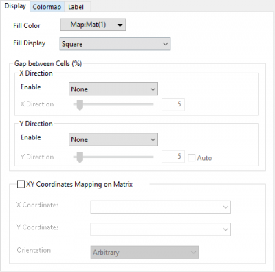
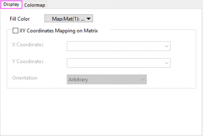

Diese Registerkarte kann verwendet werden, um Füllfarbe, Anzeigestile, XY-Koordinaten und Zellenabstände zwischen den Zellen einer Heatmap/polaren Heatmap, die sowohl aus Arbeitsblattdaten als auch aus Matrixdaten erstellt wurde, zu steuern.
|
Heatmap |
Polare Heatmap |
 |
 |
Legen Sie fest, wie die Farbe für Zellen gefüllt werden soll. Es gibt drei Farboptionen: Index, Direkt RGB und Farbabbildung.
Standardmäßig ist Map:Mat(#):"###" ausgewählt und die Registerkarte Farbpalette wird, wie folgt angezeigt. Sie können Sie verwenden, um Füllfarbe, Zellenrahmen etc. festzulegen.
Wenn Sie Index oder Direkt RGB wählen, wird die Registerkarte Farbpalette nicht gezeigt, aber die Elemente Rahmen und Transparenz werden angezeigt und lassen Sie den Zellenrahmen und die Transparen der Füllfarbe benutzerdefiniert anpassen.
Sie unterstützt die fünf Anzeigestile Quadrat, Oberes Dreieck, Oberes Dreieck ohne Diagonale, Unteres Dreieck und Unteres Dreieck ohne Diagonale. Dieses Bedienelement ist nicht für eine polare Heatmap verfügbar.
|
Hinweis:
Wenn die Heatmap X und Y nicht N*N ist, sind diese vier Optionen Oberes Dreieck, Oberes Dreieck ohne Diagonale, Unteres Dreieck und Unteres Dreieck ohne Diagonale nicht verfügbar. |
Diese Bedienelementgruppe kann verwendet werden, um den Abstand zwischen Zellen anzupassen. Sie ist nicht für eine polare Heatmap verfügbar.
Neben dem Hinzufügen eines Abstand nach jeder Zelle (außer der letzten Zelle) in XY-Richtung können Sie auch einen Abstand nach allen N Zellen, jeder N-ten Zelle und Zellen, die mit Spalte oder Beschriftungszeile festgelegt wurden (nur für X-Richtung), hinzufügen.
Die Beispiel unten zeigen Ihnen, wie Sie eine Auswahl aus der Auswahlliste treffen können:
Diese Schieber für X-Richtung und Y-Richtung werden verwendet, um die Breite des Abstands in XY-Richtung zu steuern, auf einer Skala von 0 bis 100. Das Kontrollkästchen Auto hinter dem Abstandsschieber für Y wird verwendet, um jeden Abstand in Y-Richtung genau wie in X-Richtung festzulegen.
Die Option wird üblicherweise für Heatmaps verwendet, die auf Grundlage von NetCDF-Daten gezeichnet wurden, um Längen- und Breitengrade festzulegen.
Das Festlegen von XY-Koordinaten von der Matrix aus wird unterstützt.
Legen Sie die Ausrichtung auf Beliebig, Im Uhrzeigersinn oder Gegen den Uhrzeigersinn fest.